The John Muir Trail (JMT) is a backpacking trail through California’s Sierra Nevada. For folks heading northbound, the trail begins at the top of Mt. Whitney—the tallest mountain in the contiguous US—ascending 8 mountain passes over 214 miles to Yosemite Valley. The JMT’s route traces portions of Nüümü Poyo, or the People’s Trail: historically significant trade routes maintained by people indigenous to what is now California.
A group of buddies and I took on the JMT this August. 2023 saw record snow pack in the Sierra Nevada; measures vary, but snowfall was well over twice that of an average year. Usually melted out by the end of July, many of the mountain passes we’d come across still held plenty of snow, and were rapidly melting to make for intense and plentiful river crossings. The record snowpack had also caused the partial collapse of the South Fork San Joaquin River bridge, introducing logistical uncertainty for the JMT class of 2023. It’d be a wet one.
I typically remember very little of my backpacking trips after the fact. This time around, I tried to take a couple pictures and write a couple sentences a day.1 I decided to stitch them together, unedited, as a blog post below.
Day -1: At the trailhead
Watched the sun rise in Death Valley and wrapped up the drive to the trailhead.
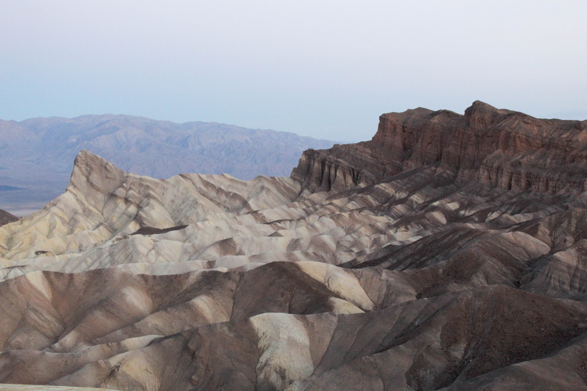 Death Valley.
Seeing the mountains from the west during the drive up had my heart racing. Met up with the last of our group, Dakota, and made a short trek to our first campsite. Hiked 5:30-7:30pm and quickly realized how fast these folks are. Some serious imposter syndrome.
Day 0: First full day
After a tough sleep and shitty coffee, I snapped the strap on one of my stuff sacks. Hit the trail with Chicken Legs, got to talking about poop and our life plans, and felt strong by 6:30am or so.
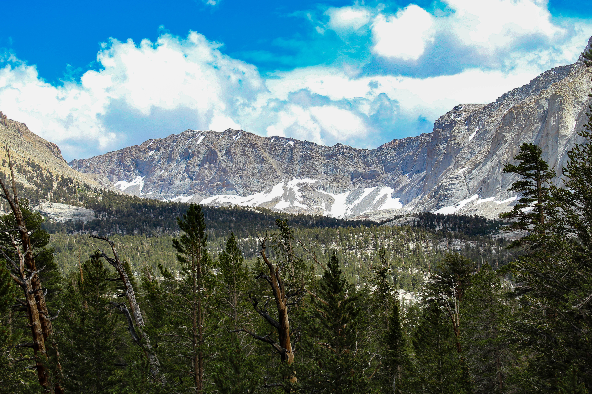 Cottonwood Pass.
Rest of the day was tough and beautiful hiking. Ended at Guitar Lake with plans to summit Whitney early the next morning.
 Guitar Lake, facing east.
Guitar Lake, facing east.
Day 1: Mt. Whitney summit
Summited Mt. Whitney at 5:55am. The ascent had a gorgeous rhythm to it: hike switchback, check for friend’s headlamps, dwell on altitude headache, repeat. It was amazing to watch the sea of headlamps build and build behind us throughout the morning.
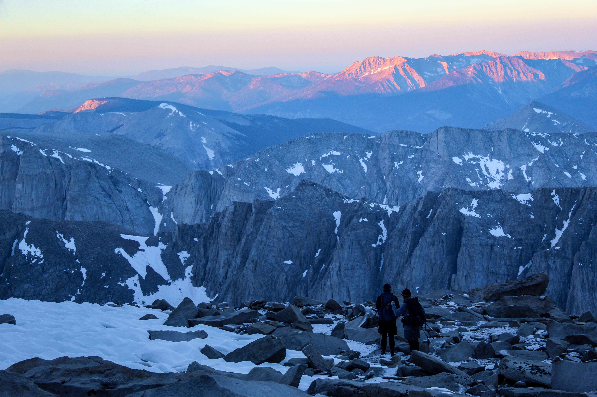 Chunks and I descending Mt. Whitney after sunrise.
As we walked further, talked with Double Dip about relationships for a while before pulling out my headphones for the first time this trip; music sounded so, so good. Ended the day (at, like, 3pm) with a quick swim and a thunderstorm.
 Double Dip near Wallace Creek.
Double Dip near Wallace Creek.
The trail begins!
Day 2: The first pass
Started out feeling really strong. I waited for Dakota to take on Forester Pass together, as this was the first technical one she had taken on, and ended up feeling glad I did—a whole lot of wet snow, and a moment where she ended up belly up stuck between a rock and two sun cups.
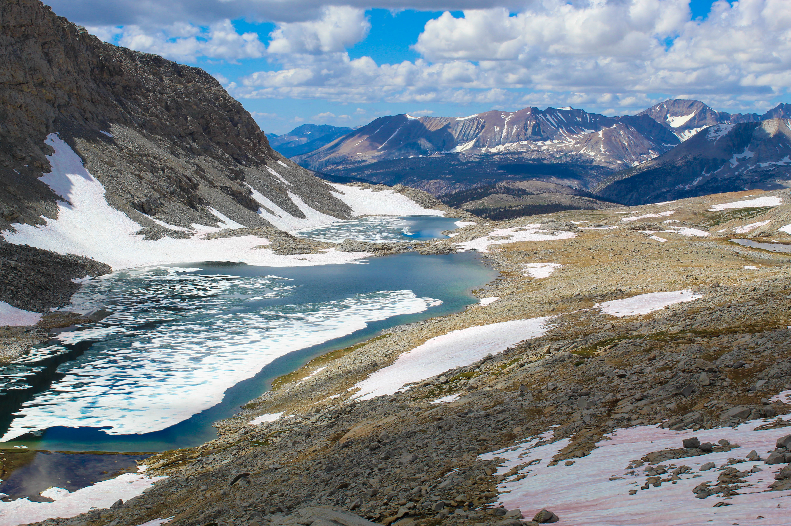 South of Forester Pass.
At some point, the ache that had started to develop in my left ankle got really intense. Had another really meaningful conversation with Double Dip on the way down to tonight’s camp, and then she got super fucking high during dinner.
Day 3: Glen Pass
Today was a hard day. Dakota decided to exit the trail in the morning, and then we came across a gnarly situation and had to help someone out while ascending Glen Pass, and then my feet really really hurt. The expected blisters and aches, but also itching that has been really intense.
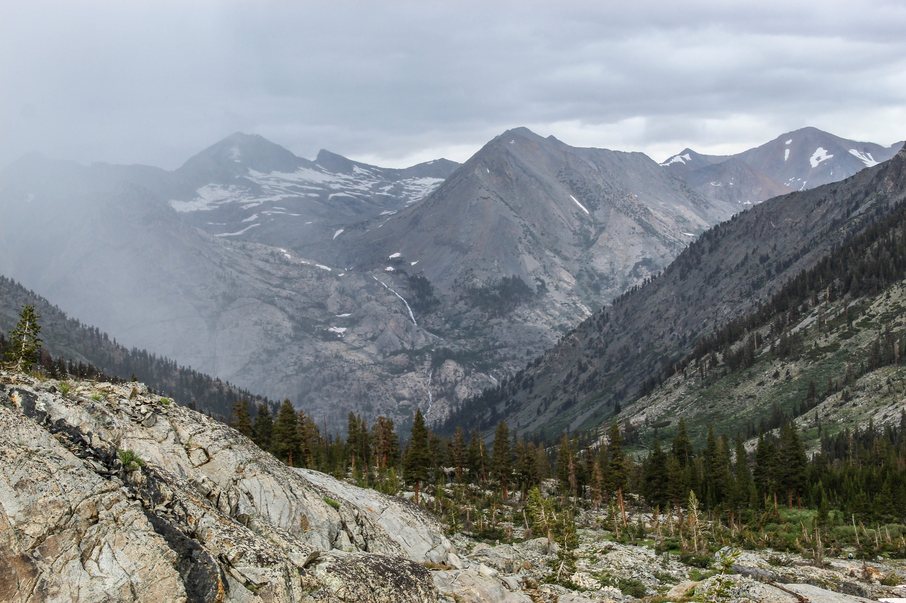 North of Glen Pass.
Day 4: Pinchot and Mather Pass
Total turnaround. Gorgeous day. Feet have stayed dry all day, aches and pains have eased a bit, found a blister that I hadn’t noticed yet and addressing it was a gamechanger.
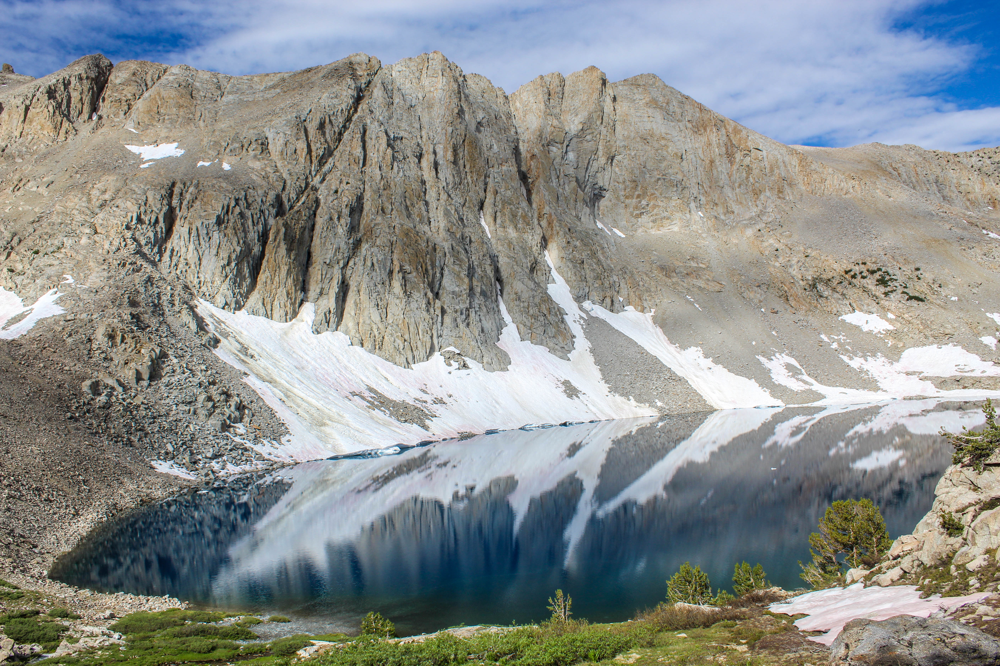 Lake Marjorie, north of Pinchot Pass.
Day ended with gnarly scramble down to treeline after a thunderstorm rolled in right as we ascended.
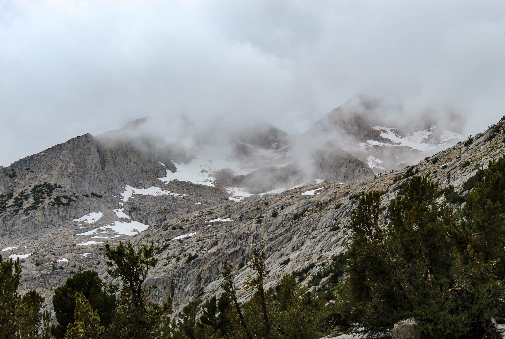 Remnants of the thunderstorm from the north side of Mather Pass.
Day 5: Slow Day
Took a low-mileage, easier terrain, wake up late and end hiking early day today. After some morning hiking with Chunks, walked the rest of the day myself.
Had some great conversations sitting around camp.
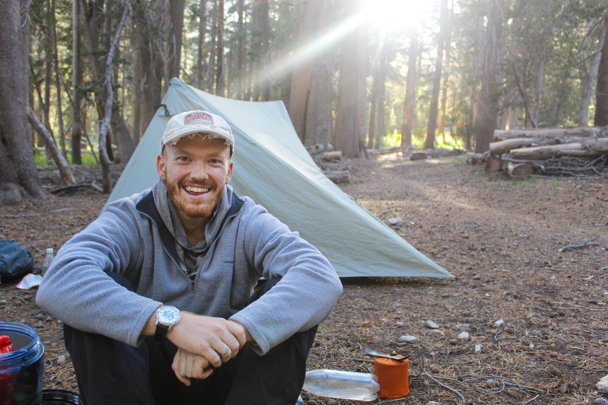 Me.
One enlightening bit was that it has rained at some point every day and every night on this trail so far. Today was our first sun-all-day day, and it felt amazing.
Double Dip just hollered at me from her tent that today was 100 miles—tomorrow will mark 50% of our trail complete.
I can’t believe that some people hike this trail and there is no snow on the passes. All of them besides Pinchot for us have had large snow fields, but Muir Pass tomorrow is supposedly the last one we’ll hit with significant snow.
Day 6: Muir Pass
Did a hell of a lot of miles to ascend Muir Pass and get ready for some early crossings in the morning. It was wet and so, so beautiful.
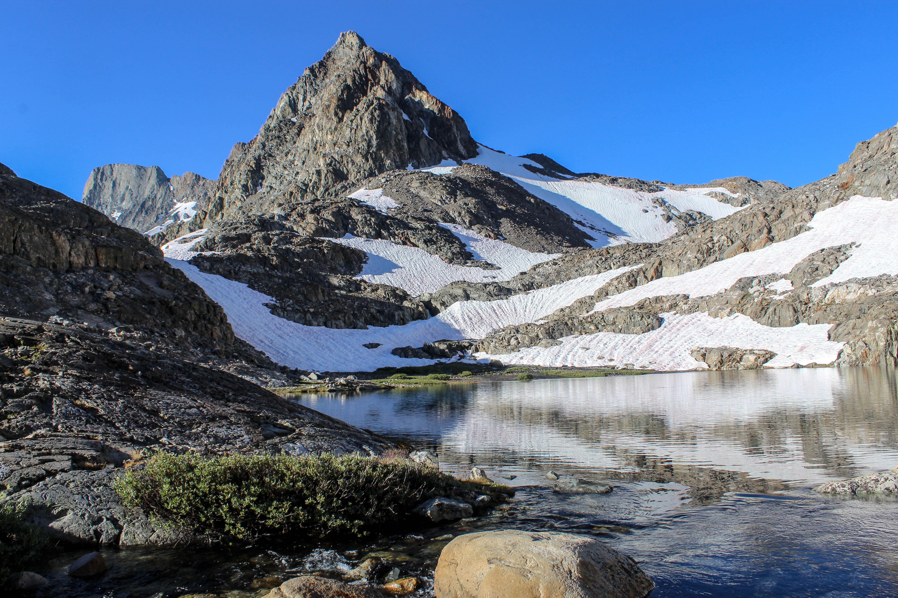 South side of Muir Pass.
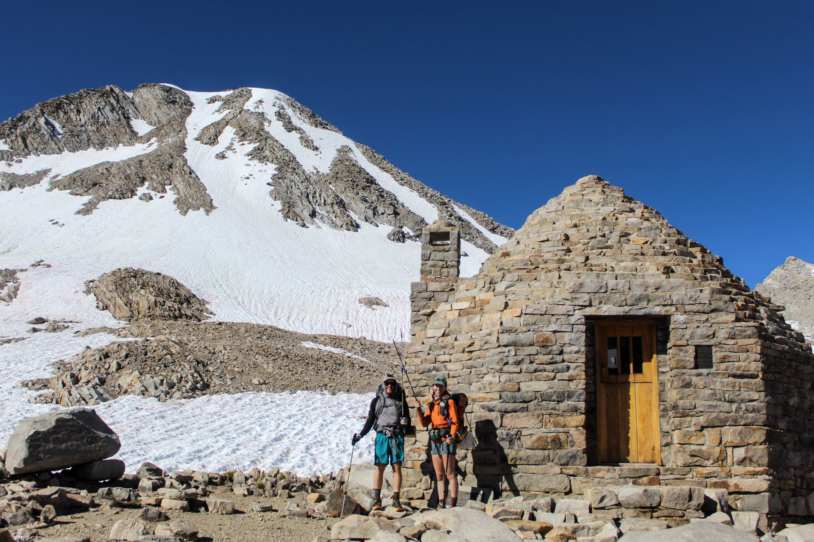 Me and Double Dip beside Muir Shelter.
A thunderstorm started right as we got to camp, though, and it looks like what’s left of Hurricane Hillary will be hitting us in mid-morning. We don’t have much food left and our resupplies are at Muir Trail Ranch—once we get there, we’ll plan for how to get through the rain. Oof.
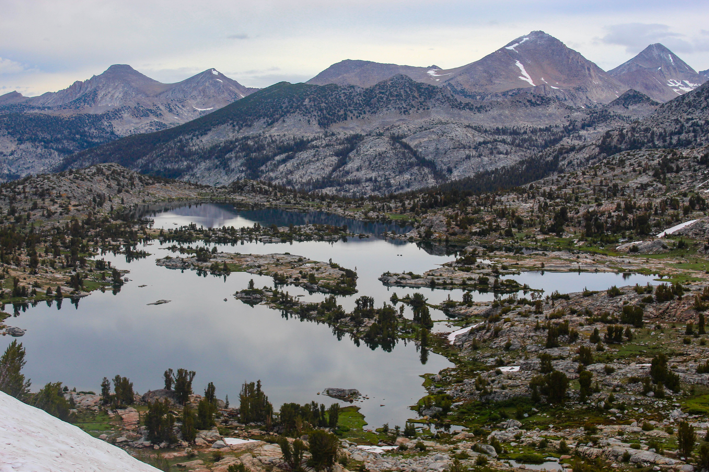 Wanda Lake, I think.
I had stopped keeping track of what weekday it was until people started talking about the hurricane. “The rains will start mid-day Saturday and won’t let up until Monday evening. Wicked winds…” yada yada. We fretted all evening about whether/how to leave trail temporarily (permanently?), whether we could get a room at one of the resupply ranches, whether we had enough food to leave the trail without first picking up our resupply. A blessing and a curse that it’s so damn hard to quit logistically.
Day 7: Muir Trail Ranch
Ultimately, we made it. Forded Evolution Creek, climbed across the bent up South Fork San Joaquin bridge, and made it to Muir Trail Ranch to pick up our food.
 Chicken Legs, packing his resupply at Muir Trail Ranch.
Chicken Legs, packing his resupply at Muir Trail Ranch.
Met a kind feller, Jib, along the way, and he’s tagging along with us for a bit.
By then, we had a reservation for a cabin at Vermillion Valley Resort 25 miles down the trail. We trekked on, made it to a campsite, got our tents pitched before the rain came (dry feet!) and will push through the rain tomorrow with a roof, warm bed, WiFi, and ice cream in mind.
Day 8: Vermillion Valley Resort
18 miles down to a (nice!) room at VVR and it seemed to be really good for everyone. Laundry, great food, and a comfy bed. All of that considered, I had a rough time there—my foot was feeling really uncomfortable without the movement—which felt a bit silly. So grateful to call with Shivani for a bit, though.
Day 9: Back on Trail
Day 2 of Hurricane Hilary was the dryest day we’ve seen on trail.
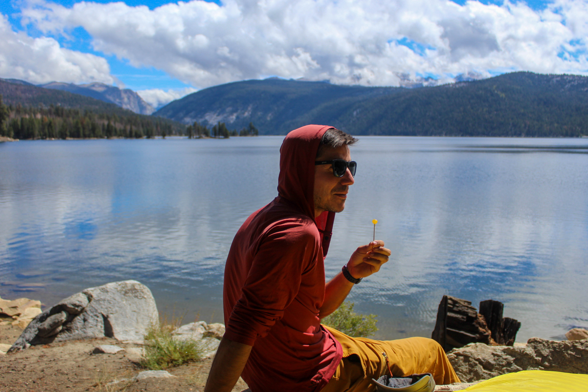 Jib, with a lollipop and a view of Lake Edison.
Douple Dip gave me a fake tattoo and we had a bit more real food before taking the ferry back out to the trail and hiking a few miles.
 Jib, Double Dip, and Chicken Legs.
Jib, Double Dip, and Chicken Legs.
Pitched our tents just before another storm. Feeling strong, ready to finish this out.
 Back on trail after VVR.
Back on trail after VVR.
Day 10: Selden and Silver Pass
Progress.
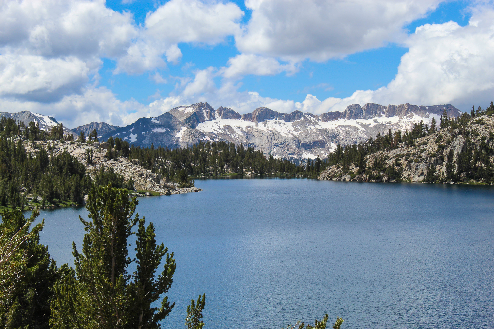 Lake Virginia, maybe.
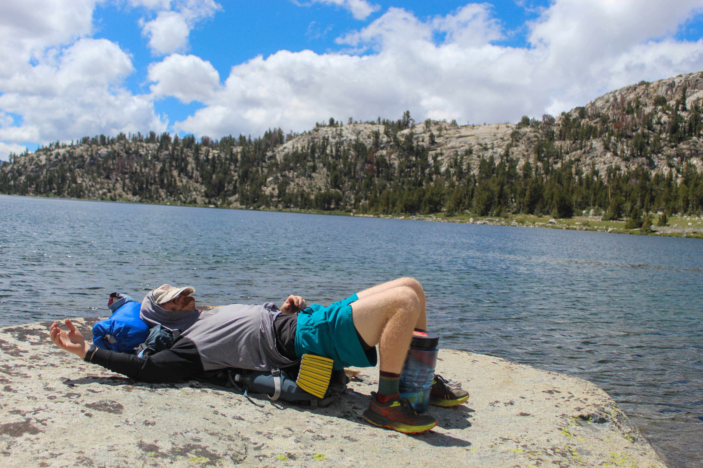 Your author.
Day 11: Reds Meadow
Pancakes, bacon, eggs, big ass milkshake, cell service. Thank god.
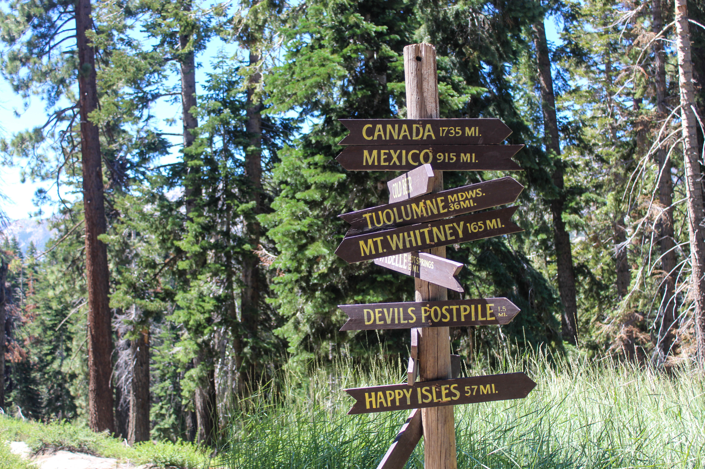 Reds Meadow’s infamous trail junction.
The day got weird after Reds. We left to hike 10 more miles to camp in a known order and ended up in a totally different order. Each of us arrived at the mile marker for the tent site we had decided to camp at to discover that there was no camp site and none of the people we expected to be there. Jib ran up and down the trail fast enough to round everybody up; what a speedy guy.
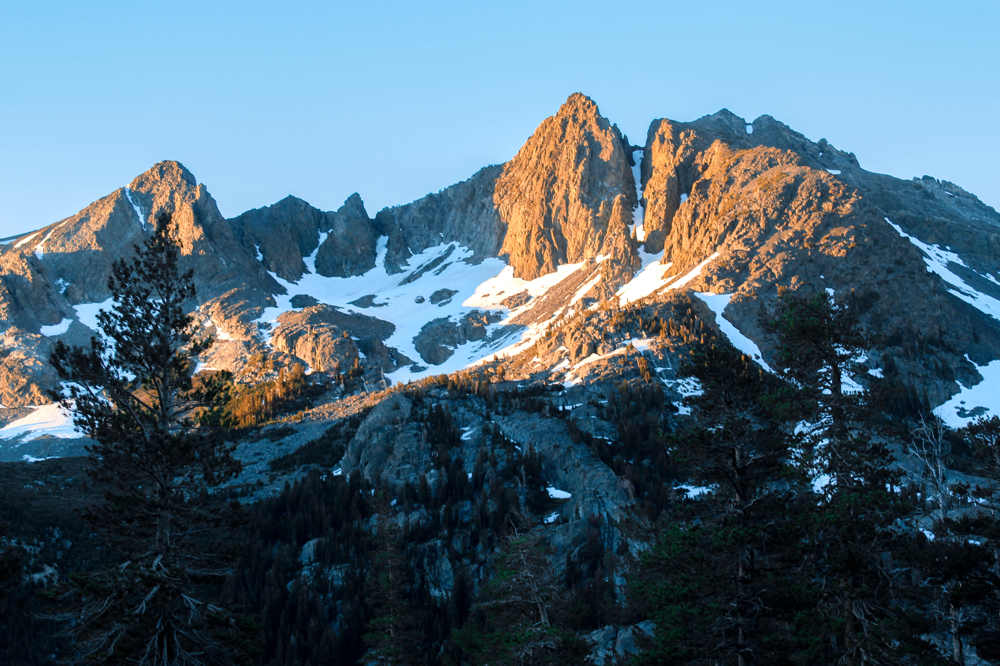 Alpine glow, somewhere in the Minarets.
While we were at Reds, we finalized the rest of our itinerary and booked our bus tickets out of the terminus. For some reason, this felt like a cue that I ought to start making sense of all that we’ve done.
Day 12: Garnet and Thousand Island Lakes
Wrapped up the last couple passes.
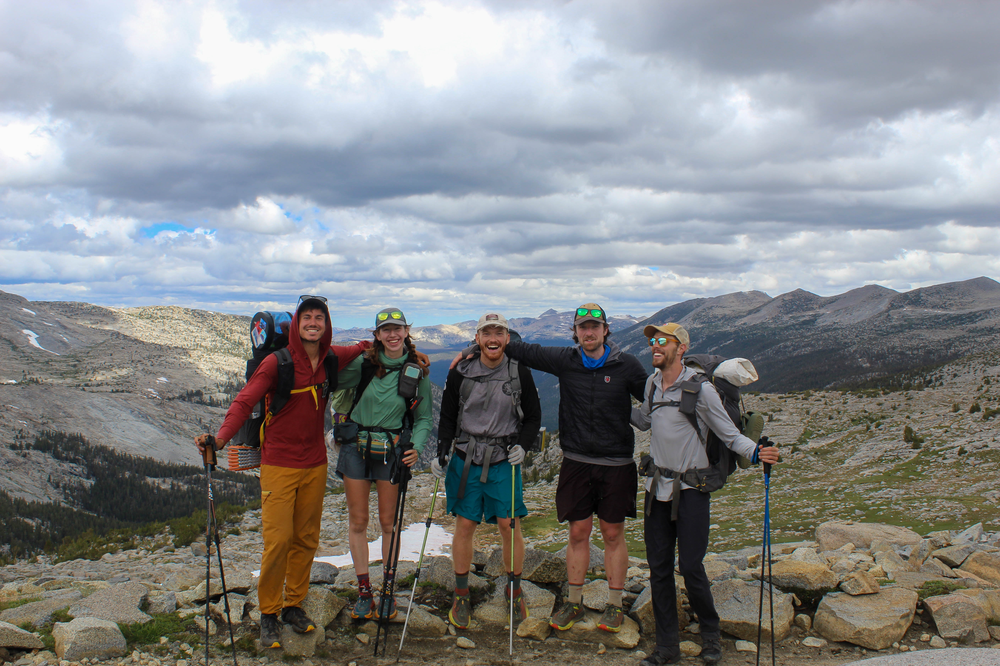 Jib, Double Dip, me, Chunks, and Chicken Legs after ascending Donahue Pass.
As I walked yesterday, I thought about how much time I had been spending staring at my feet and how stoked I’d be to see anything remotely as beautiful within a day’s drive of where I live. Today shook me back into appreciation: absolutely jawdropping.
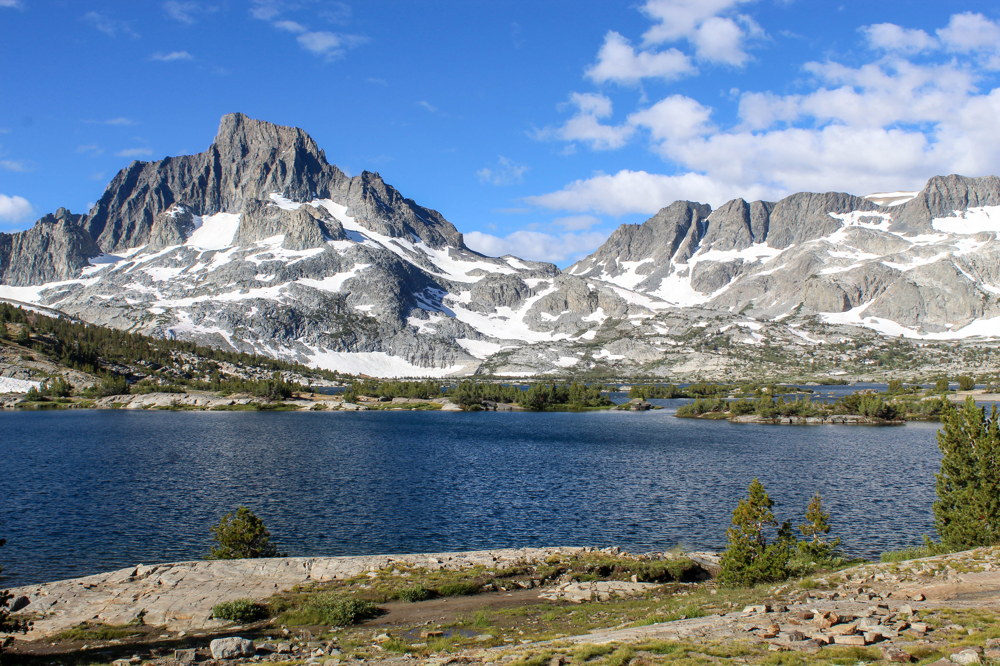 Thousand Island Lake.
Day 13: Into Yosemite
I have an unwarranted chip on my shoulder for the Yosemites and Yellowstones. People everywhere, 4 hours in traffic, a food court, trail junctions every quarter mile. Irritated, and irritated at myself for it.
Day 14: Wrapping up
Our last day consisted of the descent into Yosemite Valley, losing 5500ft of elevation over 11 miles. We all ate breakfast together and left camp late. I had felt so ready to be done these last few days, but ended taking those last miles as slowly as I could.
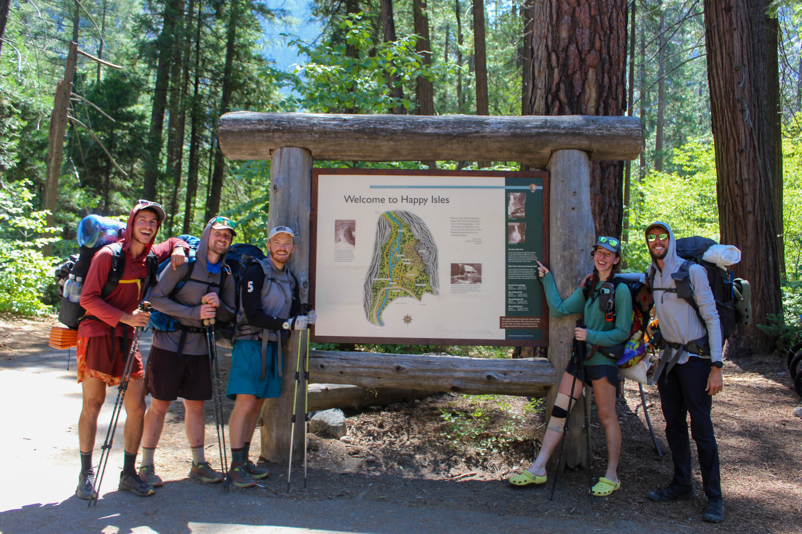 The gang at the trail terminus in Yosemite.
Concluding
I’m so, so grateful for the opportunity to walk this trail. It’s not lost on me how much had to go right for this to come together.
Since this is a data science blog:
- Average miles per day: 15.3
- Highest mileage day: 20.5
- Total elevation ascended (ft): 44,100
- Total elevation descended (ft): 51,700
- Steps taken: 579,000
Footnotes
Thank you to Double Dip for additional pictures! Hers are interspersed among my own throughout this post. The good ones are hers, but to know for sure, .jpgs are taken by her and .pngs are my own.↩︎